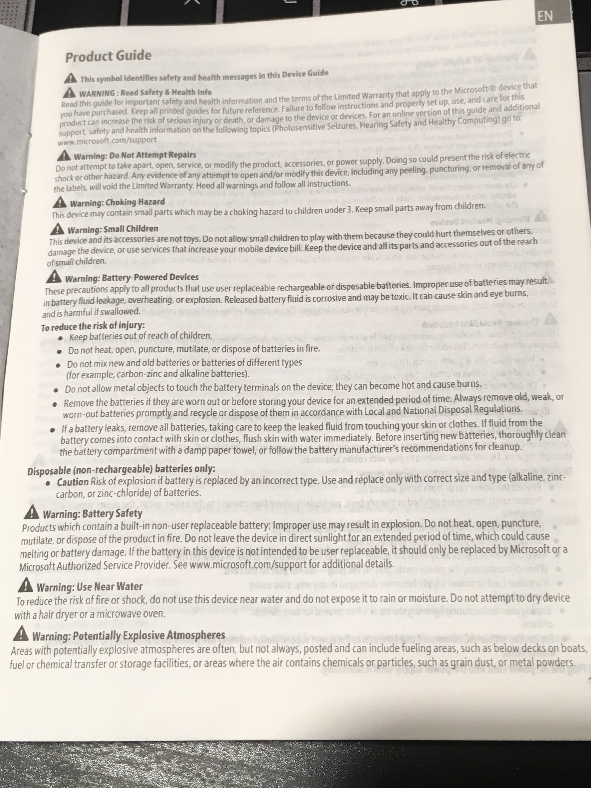
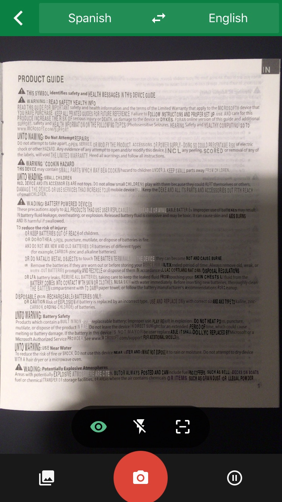
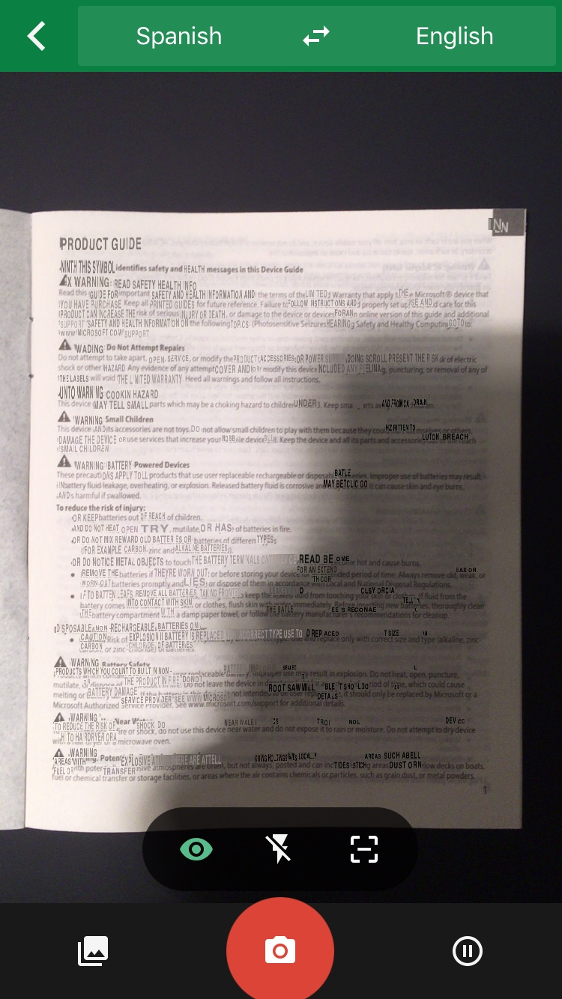
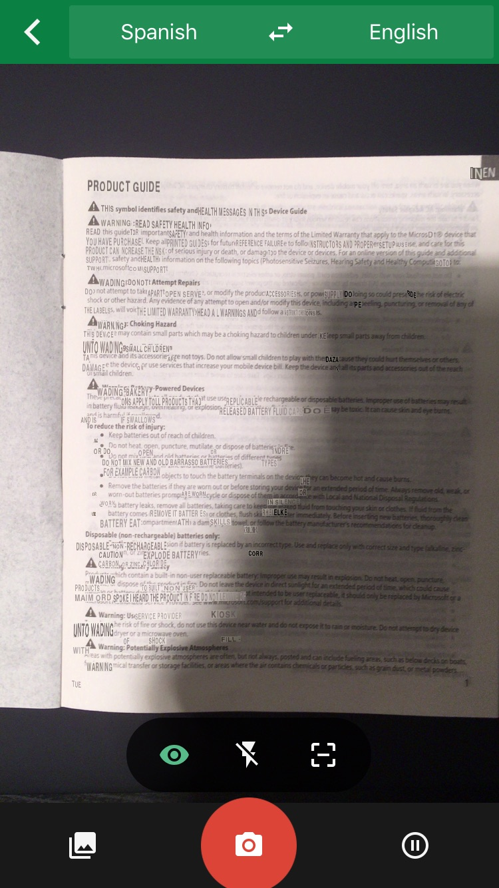

Google Translate AR
Google translate is an application for mobile devices which has an astonishing feature of Augmenting the translation of strings in foreign language to the user selected language. This is a great example of leveraging AR Technology. This is limited to the mobile devices but as this technology advances to AR glasses, this can prove to be one of the best application of AR (or may be not) :|
A test case in which the User Instruction Manual of an electronic device was subjected to transation from Spanish to English and is being compared to original English version.
Original English Version.

Google Translate Attempts.



PROS:
1) Quite Useful: Quite a useful thing from various perspectives. For instance, tourists do not need to worry about the interaction with people in foreign country and can almost convey to native speakers using translation, at least the hint if not complete sentences or contexts. Another good example will be translating the sign boards on the streets.
2) Eliminates Language as a barrier: If we assume that google translate is as perfect to a level that it completely eliminates the need of a human translator and integrates the synthetics flawlessly then there will not be any language to the human eye that will hinder the thought process. A human will hardly realise that he/she is reading the text in some foreign language.
CONS:
3) Mis-interpretation: Google translation highly depends upon language pairs. For instance, ‘Do not lean on the door.’ Will be translated to ‘daravaaje par dubala mat bano’ in Hindi which has completely different meaning of ‘Do not get slim on the door’ :D . This proves that the translation might push the interpretation in wrong direction. Hence, mistakes lead to misguidance which might lead to offensive interpretation for the native speakers as it is not perfect translation.
4) Hides Aesthetics: There are different fonts in each language to represent the same set of characters, some are inclined towards legibility while other depict art, for example, Calligraphy. Translation will map synthetic representation of the data which will hide the aesthetic value of the real representation.
5) Loss of context: If a particular string(A) lets say Adjective is written in the context of some other string or Object(B) which is noun then it fails to establish the relation between the strings and ends up translating the strings independent of each other hence losing the context.